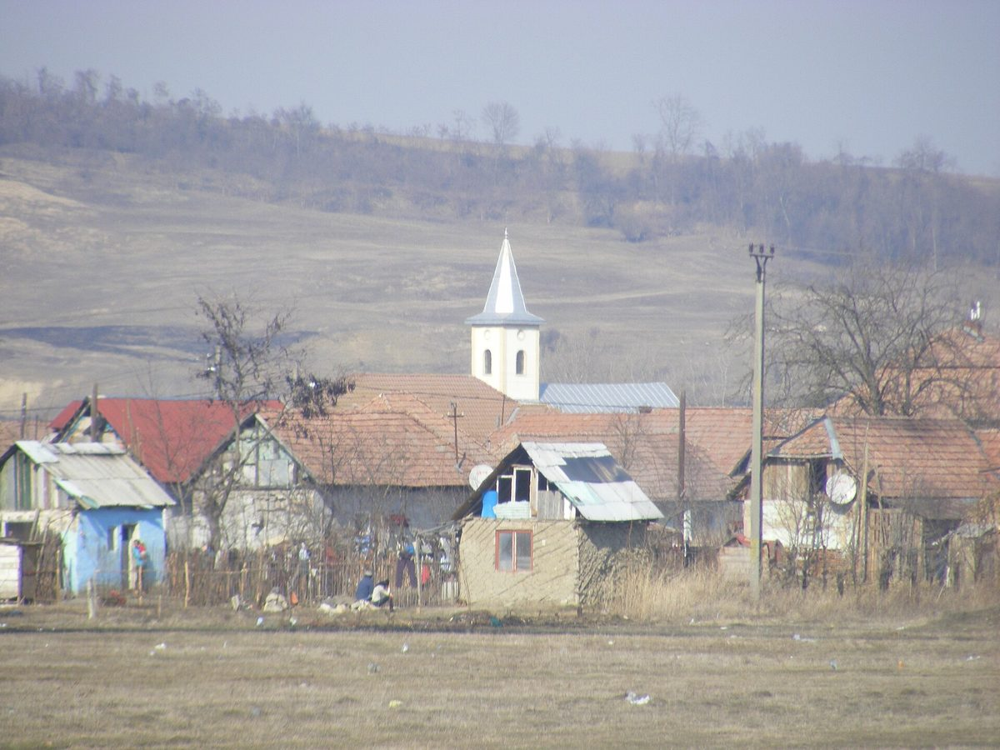

루마니아 웅게니 시의회, 공공건물 4곳·취약계층 117가구 지붕에 태양광·배터리 사업 승인…828kWp·830kWh, '재생에너지 공동체' 첫걸음

1,540만 레우 넘는 사업, EU 공정전환 프로그램 자금 신청 예정이고 시 부담은 약 49만6,000레우…가구마다 5.3kWp·5.3kWh 자가소비 전용, 첫해 약 972MWh 생산 예상
루마니아 무레슈주 웅게니(Ungheni) 시의회가 10월 말 임시회의에서 공공건물 4곳과 취약계층 117가구의 집에 태양광 패널과 배터리를 다는 사업의 타당성 조사를 승인했다(몰도바의 웅게니와는 다른 곳). 사업비는 1,540만 레우가 넘으며, 시는 EU '공정전환 프로그램 2021~2027'에서 돈을 받으려 하고 시 예산 부담은 약 49만6,000레우로 잡았다. 패널은 약 1,562장, 설비 용량은 합계 약 828kWp, 배터리는 합계 830kWh이며, 첫해 약 972MWh의 전기를 만들 것으로 예상된다. 웅게니 종합학교(패널 256장·배터리 135kWh)와 체육시설(76장·40kWh), 딸린 마을 비드러서우(Vidrăsău)의 문화회관(38장·20kWh)과 학교(22장·15kWh)에 설비가 들어가고, 117가구에는 집마다 5.3kWp 설비와 5.3kWh 배터리(패널 합계 1,170장)를 단다. 전기는 건물과 가정이 스스로 쓰는 데만 쓰고 사업이 들어간 건물·집에서는 영리 활동을 할 수 없으며, 가구는 시청이 시와 딸린 마을의 취약계층 가운데 참여에 동의하고 집을 소유하며 실제로 사는 사람을 골랐고 예비 명단 3가구도 두었다. 시는 이 사업을 녹색 전기를 함께 생산·저장·사용하는 소비자 모임인 '재생에너지 공동체'를 만드는 첫 단계로 삼을 계획이지만, 자금 확보와 착공 시기는 아직 정해지지 않았다.
시민에너지 관점
학교·체육시설·문화회관 지붕과 취약계층 117가구의 지붕을 한 사업으로 묶은 것은, 공공 투자가 재생에너지 확대와 에너지 복지를 함께 겨냥할 수 있다는 점을 보여 준다. 다만 가구별 자가소비에서 멈추면 저소득 가구는 설비를 쓰기만 할 뿐 공동체의 주인이 되기 어렵다는 우려가 남는다. 스페인 카탈루냐 지로나에서 시작한 소비자 협동조합 솜 에네르히아(Som Energia)처럼 조합원이 함께 출자하고 함께 결정하는 구조가 있어야, 공공 지원으로 깐 설비가 주민의 공동 자산으로 자란다. 국내 지자체도 공공건물·임대주택 태양광을 짓고 끝낼 것이 아니라, 처음부터 저소득 가구가 조합원으로 참여하는 에너지 공동체 설립까지 계획에 넣어야 한다.
출처: Punctul.ro 2026-11-03 Maria Manu 원문 보기
ルーマニア・ウンゲニ市議会、公共施設4棟と脆弱世帯117戸の屋根に太陽光・蓄電池事業を承認…828kWp・830kWh、「再生可能エネルギー共同体」への第一歩
総額1,540万レイ超、EU公正移行プログラムの資金を申請予定で市負担は約49万6,000レイ…各世帯5.3kWp・5.3kWhで自家消費専用、初年度約972MWhの発電見込み
ルーマニア・ムレシュ県ウンゲニ（Ungheni）の市議会は10月末の臨時会で、公共施設4棟と脆弱な立場にある117世帯の住宅に太陽光パネルと蓄電池を設置する事業の実現可能性調査を承認した（モルドバのウンゲニとは別の町）。事業費は1,540万レイを超え、市はEUの「公正移行プログラム2021〜2027」から資金を得たい考えで、市予算の負担は約49万6,000レイと見込む。パネルは約1,562枚、設備容量は合計約828kWp、蓄電池は合計830kWhで、初年度に約972MWhを発電する見通しだ。ウンゲニ総合学校（パネル256枚・蓄電池135kWh）とスポーツ施設（76枚・40kWh）、市に属するヴィドラサウ（Vidrăsău）村の文化会館（38枚・20kWh）と学校（22枚・15kWh）に設備が入り、117世帯には各戸に5.3kWpの設備と5.3kWhの蓄電池（パネル計1,170枚）を設ける。電力は建物と家庭の自家消費にのみ使い、事業の対象となる建物・住宅では営利活動ができない。世帯は市役所が市と周辺村の脆弱層のうち参加に同意し、家を所有して実際に住んでいる人から選び、補欠名簿として3世帯も用意した。市はこの事業を、グリーン電力を共に生産・貯蔵・利用する消費者の集まりである「再生可能エネルギー共同体」をつくる第一段階とする計画だが、資金確保と着工時期はまだ決まっていない。
市民エネルギーの視点
学校・スポーツ施設・文化会館の屋根と脆弱な117世帯の屋根を一つの事業にまとめたことは、公共投資が再生可能エネルギーの拡大とエネルギー福祉を同時に狙えることを示している。ただ、世帯ごとの自家消費で終われば、低所得世帯は設備を使うだけで共同体の主人にはなりにくいという懸念が残る。スペイン・カタルーニャのジローナで始まった消費者協同組合ソム・エネルジア（Som Energia）のように、組合員が共に出資し共に決める仕組みがあってこそ、公的支援で設けた設備が住民の共有財産に育つ。韓国の自治体も公共施設や賃貸住宅の太陽光を建てて終わりにせず、最初から低所得世帯が組合員として参加するエネルギー共同体の設立まで計画に盛り込むべきだ。
出典: Punctul.ro 2026-11-03 マリア・マヌ 原文を読む
罗马尼亚温格尼市议会批准在4座公共建筑和117户困难家庭屋顶安装光伏和储能…828kWp、830kWh，迈向"可再生能源社区"第一步
项目总额逾1,540万列伊，拟申请欧盟公正转型计划资金，市财政负担约49.6万列伊…每户5.3kWp、5.3kWh仅供自用，预计首年发电约972兆瓦时
罗马尼亚穆列什县温格尼（Ungheni）市议会在10月底的临时会议上，批准了在4座公共建筑和117户困难家庭住宅上安装光伏板和储能电池项目的可行性研究（与摩尔多瓦的温格尼并非同一地）。项目总额超过1,540万列伊，市政府打算从欧盟"2021—2027年公正转型计划"获得资金，市财政负担预计约49.6万列伊。项目共约1,562块光伏板，总装机约828kWp，电池总容量830kWh，预计首年发电约972兆瓦时。设备将安装在温格尼综合学校（光伏板256块、电池135kWh）、体育设施（76块、40kWh）以及下辖村庄维德勒瑟乌（Vidrăsău）的文化馆（38块、20kWh）和学校（22块、15kWh）；117户家庭每户安装5.3kWp设备和5.3kWh电池（光伏板合计1,170块）。所发电力只供建筑和家庭自用，纳入项目的建筑和住宅内不得从事经营活动；住户由市政府从市区及下辖村庄的困难群体中挑选，须同意参与并证明拥有住房且实际居住，另有3户候补名单。市政府计划把该项目作为建立"可再生能源社区"——即共同生产、储存和使用绿色电力的消费者群体——的第一步，但资金落实和开工时间尚未确定。
市民能源视角
把学校、体育设施、文化馆的屋顶与117户困难家庭的屋顶纳入同一个项目，说明公共投资可以同时兼顾扩大可再生能源和能源福利。不过，如果止步于各户自发自用，低收入家庭只是使用设备，很难成为社区的主人，这一担忧依然存在。只有像发源于西班牙加泰罗尼亚赫罗纳的消费者合作社Som Energia那样，由社员共同出资、共同决策，公共资金支持建成的设施才能成长为居民的共同资产。韩国地方政府也不应在公共建筑和租赁住房上装好光伏就了事，而应从一开始就把低收入家庭作为社员参与的能源社区的设立纳入规划。
来源: Punctul.ro 2026-11-03 玛丽亚·马努 查看原文
Romania's Ungheni council approves solar and batteries on four public buildings and the homes of 117 vulnerable households, 828kWp and 830kWh, as a first step toward a renewable energy community
Project worth over 15.4 million lei to seek EU Just Transition Programme funding, with about 496,000 lei from the town budget; 5.3kWp and 5.3kWh per home for self-consumption only, about 972MWh expected in the first year
The local council of Ungheni in Romania's Mureș county approved at an extraordinary session at the end of October the feasibility study for a project to fit solar panels and batteries on four public buildings and on the homes of 117 vulnerable households (not to be confused with Ungheni in Moldova). The project is worth more than 15.4 million lei, and the town wants to obtain the money through the EU's Just Transition Programme 2021–2027, with the local budget contributing about 496,000 lei. It involves about 1,562 panels with a combined capacity of about 828kWp and batteries totalling 830kWh, and is expected to generate about 972MWh in its first year. The systems will go on Ungheni's general school (256 panels and a 135kWh battery), its sports base (76 panels, 40kWh), and the cultural centre (38 panels, 20kWh) and school (22 panels, 15kWh) in the village of Vidrăsău, which belongs to the town, while each of the 117 homes gets a 5.3kWp system with a 5.3kWh battery (1,170 panels in total). The power is for the buildings' and households' own use only, no economic activity is allowed in the buildings and homes in the project, and the town hall chose the households from vulnerable residents of the town and its villages who agreed to take part and could prove they own and live in the house, with a reserve list of three. The town intends the project to be the first step toward founding a renewable energy community, a group of consumers who produce, store and use green power together, but funding has not yet been secured and no construction date has been set.
Citizen Energy View
Bundling the roofs of a school, a sports base and a cultural centre with those of 117 vulnerable households into one project shows that public investment can target both renewable expansion and energy welfare at once. Yet if it stops at household self-consumption, there is a concern that low-income families will merely use the equipment without becoming owners of the community. Only with a structure like Som Energia, the consumer cooperative that began in Girona in Catalonia, Spain, where members invest together and decide together, can equipment installed with public support grow into residents' shared assets. Korean local governments, too, should not stop at putting solar on public buildings and rental housing, but should plan from the outset to found energy communities in which low-income households take part as members.
Source: Punctul.ro 2026-11-03 Maria Manu Read the original